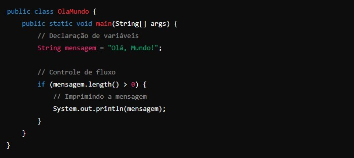
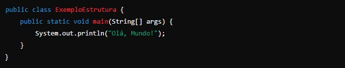
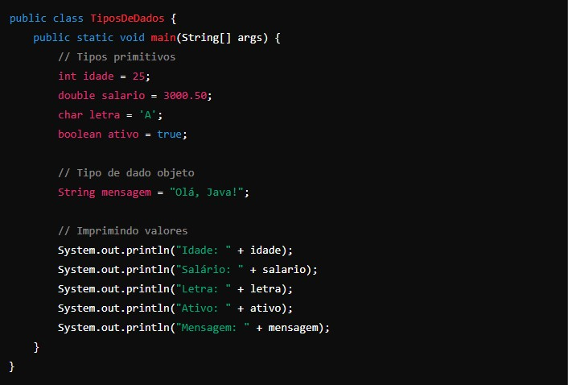
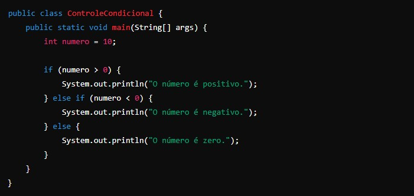
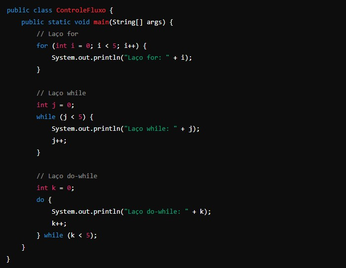
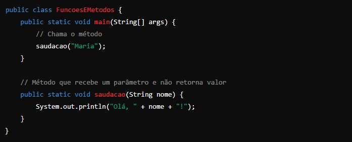
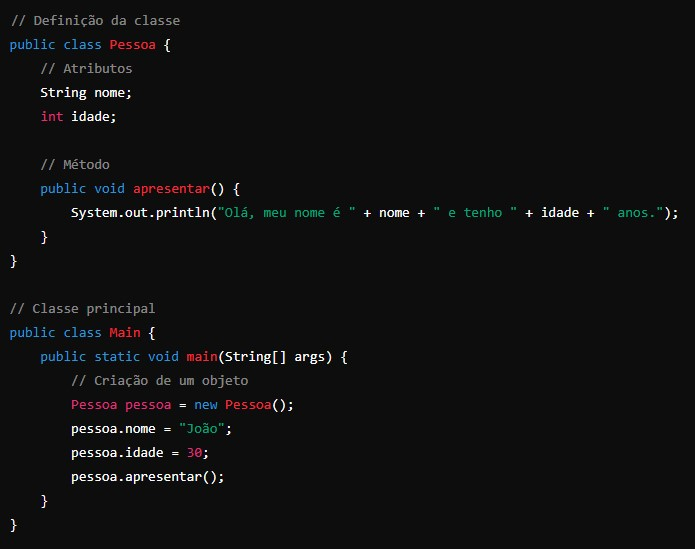
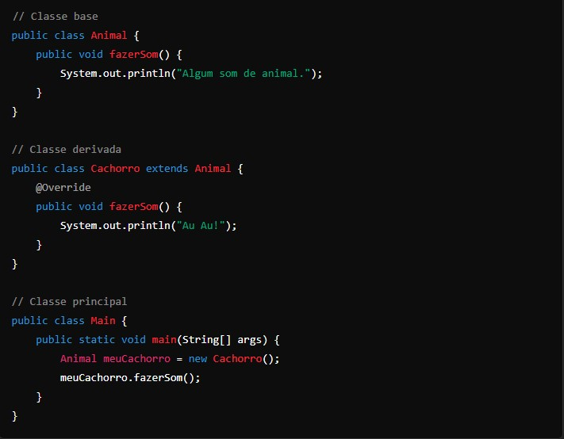
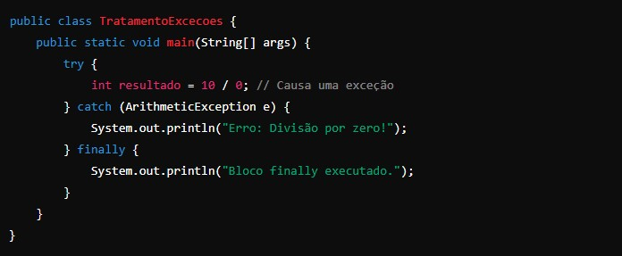
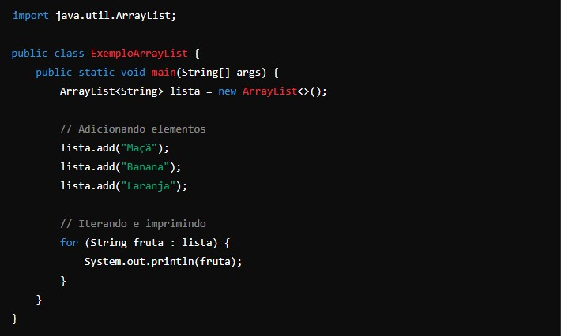

Java -
A lógica de programação em Java, como em outras linguagens de programação, é a maneira como você pensa e organiza a sequência de instruções para resolver um problema ou realizar uma tarefa específica. Java é uma linguagem orientada a objetos, o que significa que ela organiza o código em "objetos" e "classes".
Aqui estão alguns conceitos fundamentais para entender a lógica de programação em Java:
1. Estrutura Básica:
- Classe: A estrutura básica em Java. Todo o código Java é escrito dentro de uma classe.
- Método main: O ponto de entrada do programa Java. O método main é onde a execução do programa começa.
2. Tipos de Dados:
- Primitivos: Incluem int, char, boolean, double, entre outros.
- Objetos: Referências para instâncias de classes (por exemplo, String, ArrayList).
3. Variáveis:
- Armazenam dados e devem ser declaradas com um tipo específico (ex: int idade = 30;).
4. Controle de Fluxo:
- Condicionais: Estruturas como if, else if, else, e switch são usadas para tomar decisões baseadas em condições.
- Laços: Estruturas de repetição como for, while, e do-while permitem repetir blocos de código.
5. Funções e Métodos:
- Métodos: Blocos de código que realizam uma tarefa específica e podem retornar um valor.
- Parâmetros e Argumentos: Métodos podem aceitar parâmetros e você passa argumentos quando chama o método.
6. Orientação a Objetos:
- Classes e Objetos: Classes definem tipos de dados e métodos associados. Objetos são instâncias dessas classes.
- Encapsulamento: Protege os dados e métodos da classe com modificadores de acesso (como private, protected, public).
- Herança: Permite criar uma nova classe baseada em uma classe existente.
- Polimorfismo: Permite que métodos se comportem de diferentes maneiras dependendo do tipo de objeto.
7. Tratamento de Exceções:
- Blocos try-catch: Usados para capturar e tratar erros que podem ocorrer durante a execução do programa.
8. Bibliotecas e APIs:
- Java possui uma vasta biblioteca padrão (Java Standard Library) com classes e métodos úteis para tarefas comuns (ex: manipulação de strings, coleções, I/O).
9. Conceitos Avançados:
- Coleções: Estruturas de dados como ArrayList, HashMap, etc., para armazenar e manipular grupos de objetos.
- Threads: Permitem a execução paralela de tarefas.
- Streams e Lambda Expressions: Facilitam o processamento de coleções e operações funcionais.
Exemplo simples de um programa Java que demonstra alguns desses conceitos:

1. Estrutura Básica

2. Tipos de Dados

3. Controle de Fluxo
Condicional

Laços

4. Funções e Métodos

5. Orientação a Objetos
Classe e Objeto

Herança

6. Tratamento de Exceções

7. Coleções
Usando ArrayList

Esses exemplos cobrem as estruturas e conceitos básicos de Java, fornecendo uma base sólida para entender e escrever programas em Java. Se precisar de mais detalhes sobre algum desses conceitos ou outros aspectos da linguagem, sinta-se à vontade para perguntar!